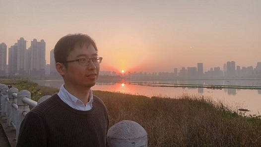

Yuchong Hu (胡燏翀)
Associate Professor, Doctoral advisor(博导),
School of Computer Science and Technology,
Huazhong University of Science and Technology (华中科技大学)
|
Address: |
B509, Wuhan National Laboratory for Optoelectronics
School of Computer Science and Technology
Huazhong University of Science and Technology
Wuhan, China, 430074 |
Email: |
yuchonghu [at] hust.edu.cn |
|

twitters |
Yuchong Hu received the B.Eng. degree in
Computer Science and Technology from Special Class for the Gifted Young (SCGY), the University of Science and Technology of China (USTC) in 2005, and the Ph.D. degree in Computer Software and Theory from the University of Science and Technology of China (USTC) in 2010. He was a postdoctoral researcher at the Institute of Network Coding (INC) at the Chinese University of Hong Kong (CUHK) in 2010-2012, and was a postdoctoral researcher at the Department of Computer Science and Engineering at the Chinese University of Hong Kong (CUHK) in 2013-2015. He is now an associate professor of the School of Computer Science and Technology at the Huazhong University of Science and Technology (HUST).
His research mainly focuses on designing and implementing storage systems with "extreme storage saving" while still maintaining high performance based on erasure coding and deduplication techniques, where the storage systems include cloud storage, big data storage, in-memory KV stores, backup storage, blockchain storage, etc.
He published 12 papers as the first/corresponding author in conferences FAST (twice), INFOCOM, SoCC, and jounrals TOS, JSAC, TON, TIT, TIFS, TPDS. He also published more than 40 papers in major journals and conferences, including TC, ATC, DSN, MSST, IWQoS, SRDS, ICPP, ICPADS, ISPA, ISIT, ICC, etc.
News:
Dec.
Nov.
July
May
Oct.
Sep.
Sep.
Aug.
June
April
Jan.
Jan.
Oct.
Aug.
Jul.
April
Jan.
Nov.
Oct.
Sep.
Aug.
Jun.
May
Apr.
Jan.
Jan.
|
2020:
2020:
2020:
2020:
2019:
2019:
2019:
2019
2019:
2019:
2019:
2019:
2018:
2018:
2018:
2018:
2018:
2017:
2017:
2017:
2017:
2017:
2017:
2017:
2017:
2017:
|
FAST accepted (First & corresponding author).
TOS accepted: Congrats to Xiaolu Li!
Journal of Systems Architecture accepted: Congrats to Liuqing Ye!
TOS accepted: Congrats to Liuqing Ye!
National scholarship for graduate students awarded: Congrats to Liangfeng Cheng!
ICCD accepted: Congrats to Chunxue Zuo!
SoCC accepted: Congrats to Liangfeng Cheng!
TON accepted (corresponding author).
SRDS accepted: Congrats to Liuqing Ye!
ICPP accepted: Congrats to Mengting Lu!
NSFC General Programs（PI）
湖北省科技进步奖一等奖
National scholarship for graduate students awarded: Congrats to Xiaoyang Zhang and Liangfeng Cheng!
ICCD accpeted: Congrats to Chunxue Zuo!
Chair of "Tech. & App. Forum of Next-generation Memorizer" at "Global Storage Semicon & Flash Memory Technology Summit".
Aliyun-CCF TCIST Excellent Paper Award: Congrats to Xiaoyang Zhang!
Outstanding Undergraduate Thesis Award, Hubei Provincial Education Department: Congrats to Liangfeng Cheng!
INFOCOM accepted: Congrats to Xiaoyang Zhang!
National scholarship for graduate students awarded: Congrats to Wenxiang Chen!
ISPA accepted: Congrats to Wenxiang Chen!
TOS accepted (first author).
TIFS accepted (corresponding author).
SRDS accpeted: Congrats to LiuQing Ye!
TiT accepted (first author).
TPDS accepted (corresponding author).
JSAC accepted (corresponding author).
|